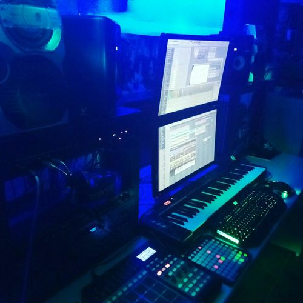
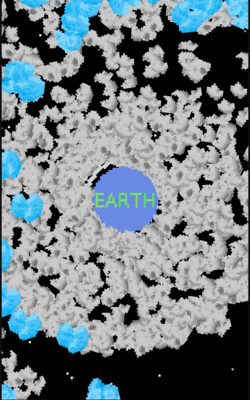

Pity About Earth...
Humanity, listen up. This is the Universe. I am sick of you sticking your nose where it doesn’t belong. That’s why there’s a huge asteroid heading straight for your pitiful Earth, courtesy of yours truly. I see you’ve built a flimsy Barrier and a stockpile of Missiles, but it won’t help. Enjoy the end times! Bye-bye. Talk soon.
– The Universe
The weekend before Ludum Dare, I wrote a post about preparing for Ludum Dare 38. It began as follows.
Ludum Dare 38 is currently hurtling through space on a direct trajectory with next weekend. Impact is estimated at 9PM on Friday, and the result will be a chaotic, harebrained, and fun-filled weekend.
Those words must have put us under some kind of spell, because over the weekend Jared and I built a chaotic, harebrained game about protecting the Earth from asteroids on a direct trajectory with Earth.
Weekend Retro
On Friday night, we planned out a 1v1 multiplyer game where one player defends Earth at the other played as a cruel Universe intent on destroying Earth with asteroids. It wasn’t until Saturday evening that we decided to drop the multiplayer component, due to the some incompatible opinions Lance server imposes on the game client’s build system.
After dropping multiplayer, our velocity shot up and we implemented most of the game mechanics, gameplay, and difficulty tuning on Sunday. Here’s a series of clips showing the progression of the game starting Saturday morning and ending Monday night.
We finished about 20 minutes before the submission deadline.
Ear Candy
The most exciting part of LD38 for us was working with a Veuskemini. Audio has always been our weakest point, so working with a composer was a huge thrill. This guy is seriously talented! We sent him a description of the game plan on Friday night, and the next morning he had already laid down two amazing, intense, evocative tracks. If we score well in any category, I’m confident it will be Audio. Check out this studio!

You can listen to the Pity About Earth OST directly. You can also find more of Veuskemini’s work at: YouTube, Facebook, Soundcloud, Bandcamp, Loudr, Reverbnation, and Instagram.
Reception
Some kind streamers have already played Pity About Earth for their audiences. Here are links to the VODs (the VODs expired on Twitch), and pictures of their faces while playing.
| face | name |
|---|---|
 |
TogisLp |
| drazil100 | |
 |
JenniNexus |
Judging is ongoing and we’ve gotten some good suggestions so far, mostly centering around the fact that the game is too hard. We’ll certainly tune that post-jam, but the game at its core is an arcade survival game, so the difficulty will eventually kill you.
Out of the games I’ve rated, my favorite so far is Crater Creator, an impresisve compo (hard mode) game about smashing asteroids into a planetoid to make it large enough to become habitable. It’s a pleasing counterpart to our game about deflecting asteroids to keep a planet habitable. Great fun!
Post-Jam improvements
We fixed a few bugs post-jam, like a barrier-lockup bug that caused the barrier to become unmovable. We’ve also been brainstorming ideas that we couldn’t fit into the jam weekend, like improving the missile ability, making the viewport a square instead of a portrait rectangle, and granting bonus score for blocking full asteroid barrages. We plan to implement these changes after judging has concluded.

As you can probably tell from the screen orientation, the game was designed with mobile in mind. Mobile wasn’t a big priority for the jam, but we plan to post the game to app stores after jam judging is complete. Some tweaks will be necessary, like lessening the already-punishing difficulty.
Thanks to our families, the players, the streamers who’ve played the game, and all othe other LDJAM participants!